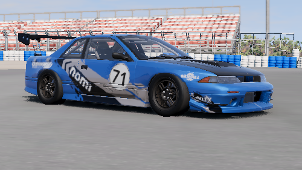
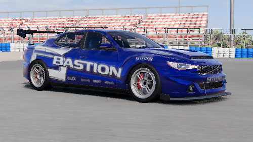
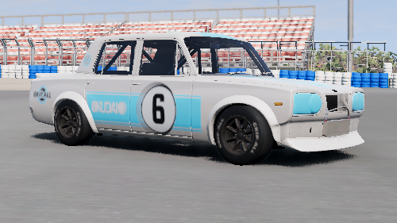
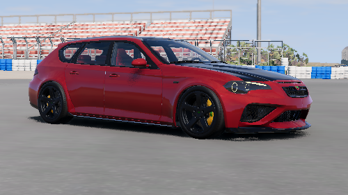
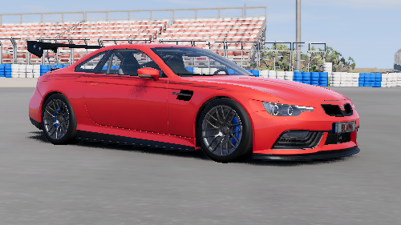
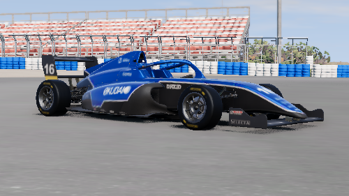
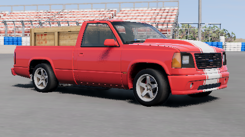
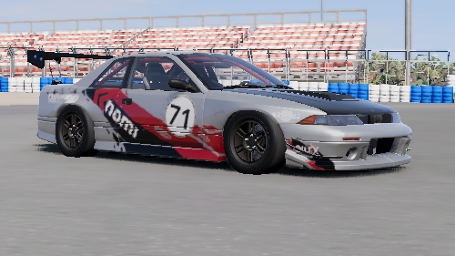
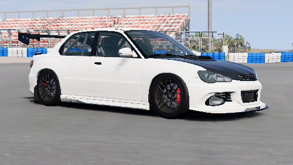

The Racing Course: Practical Section
This section hosts the link for the practical section of the course, and instructions on how to download the course material, import it into BeamNG.drive, and start playing!
Requirements
You will need the following before you begin
- BeamNG.drive version 0.33 or above
- A PC capable of running the game. Minimum specs are generous to handle multiple low to medium-end PCs
- The practical section course material
one of:
- A controller with analog trigger inputs (XBOX 360, XBOX ONE, PS3, PS4, PS5 Controllers Recommended)
- A simulation steering wheel and pedal setup with optional Force Feedback (Thrustmaster, Logitech, Fanatec Recommended)
- A will and desire to learn racing fundamentals!
Step 1: Download BeamNG.drive
BeamNG.drive is the simulation video game that hosts the practical lessons and material. It hosts a tailor-made vehicle engine, complete with unique suspension, wheel, engine, and body/collision physics which mimic real-world driving and racing scenarios. As such, this video game is perfect for this course. The game is also supported by low-end spec computers for accessibility purposes.
The cost to download is $25, with the game regularly going on sale for 20% off.
Step 2: Set Up Your Controller
Recommended: Sim Rig
The recommended controller setup is using a simulation steering wheel and pedal setup. This gives you the best feeling and familiarity with a real car. A steering wheel/pedal set up with force feedback is preferred. Force feedback mimics real world driving by allowing you to feel handling changes, terrain changes, and other driving effects through motors and vibrations in the steering wheel, which respond to what is happening in the simulation.

Recommended: Analog Input Controller
An analog controller, such as an XBOX One controller, is next up on the recommendation list. The fidelity is not as robust as it is on a sim rig, but can be sufficient for learning. Chances are, you may have one of these controllers at home.
Analog inputs, especially in the triggers, are highly recommended as you can fine-tune throttle/braking inputs with these inputs. With purely digital (on/off switch) triggers, fine granularity is not possible
Not Recommended: Keyboard and Non-Analog Input
Keyboards and Non-Analog Input devices, simply put, are not recommended specifically due to the fact that fine granularity of input is not supported. Using a keyboard for gas/brake would be like only being able to use full throttle or no throttle (with no in-between) in your car, or only fully turning the wheel left or right instead of turning slightly in order to navigate a turn. It is not practical in real life, and therefore, not practical for the racing course.
Step 3: Import Course Material
BeamNG.drive allows you to import mods and other game material straight from the main menu UI screen, making importing a quick and easy job.
Alternatively, you can open BeamNG and click the shortcut to navigate to the “user” folder provided by BeamNG.drive. You can then unzip the course content into this folder (overwrite and merge if needed).
Step 4: Begin!
Here’s how to get started
-
Open Free Play mode and navigate to "West Coast"
-
You can start directly from the “Race Track” or pick any starting location and then drive yourself to the race track

-
Drive to the Pit Lane, and find the blue markers to start the practical lessons!

Specially Tuned Vehicles
Below is the list of specially designed vehicles for the racing course. Each vehicle here takes one of the base BeamNG.drive cars and modifies internal componentry (suspension, brakes, engine, aero, weight, etc) to either improve to downgrade the stock performance, giving a better feel for the course content. Some of the tuning has been modified to be slightly unrealistic, but tuned to give a better feel in the simulation in order to really see and feel how various cars behave under certain conditions.
All cars can be used with any input method, but some were designed with steering wheels or controllers in mind.
Designed for Steering Wheels
1. Ibishu BX Diana - THE Racing Course Car

This car was actually tuned and modified before the course inception, and driving this car has been such a pleasure that it is the catalyst for this course.
Specs:
- FR Layout
- Manual Gearbox
- Uses Turbocharged Nissan RB25DETT inline-6 engine
- Modified Aero and Slick tires for grip (pre-warmed for optimal grip)
- Modified brake efficiency
- Upgraded turbo and engine internals for robustness
- Free-Flowing Exhaust
- ABS included, no Traction/Stability Control
2. Brucknell Bastion - High-Power Handful

Specs:
- Front-engine, RWD Layout
- Low Grip
- BIG Power, a little hard to manage
- ABS, Traction/Stability Control included (default OFF)
3. Ibishu Covet - FF Weapon

Specs:
- Front-engine, FWD Layout
- High Grip
- Shortened Gear Ratio for good low end torque but lower top speed
- Rear-weight bias, full throttle means loss of grip in the front, (throttle affects steering)
- No ABS, Traction/Stability Control
3. Ibishu Miramar - Classic Trackday Car

Specs:
- Front-engine, RWD Layout
- Low power
- Lowered center of gravity, balanced handling
- No ABS, Traction/Stability Control
4. Cherrier FCV - Hot Hatch Trackday Car

Specs:
- Front-engine, FWD Layout
- Bigger/Heavier Car
- Lowered center of gravity, improved aero, great handling
- ABS, Traction/Stability Control (default off)
5. ETK 800 - V8 Highway Missile

Specs:
- Front-engine, AWD Layout
- Big turbo V8, lots of torque and high speed
- Heavy Wagon
- Downgraded brake capability for teaching brake conservation
- ABS, Traction/Stability Control (default ON)
5. ETK 800 - V8 Track Day

Specs:
- Front-engine, AWD Layout
- Big Turbo V8, lots of torque and high speed (less than Highway Missile version)
- Upgraded Aero
- Downgraded brake capability for teaching brake conservation
- ABS, Traction/Stability Control (default ON)
5. Carbonworks F4 - Pure Racer

Specs:
- Mid engine, RWD Layout
- Small boxer-4 engine, very punchy
- Super high grip tuning - aero and suspension/tires offer crazy amounts of grip
5. Gavril D-Series Truck - Smoothness

This truck was tuned specifically for the smoothness drill
Specs:
- Front engine, RWD Layout
- Truck V8, tuned for racing
- Unsecured Load (wooden box 400kg) slides around and could fall off
- Used for training drill – smooth driving will keep the unsecured payload inside the truck bed.
Designed for Controller Input
1. Ibishu BX Diana - Controller Car

This car was actually tuned similarly to THE racing course BX Diana, but modified to have less power, AWD, and the full stability/safety suite for optimal controller play-through.
Specs:
- Front-engine, AWD Layout
- Manual Gearbox
- Uses 2.0L Turbocharged Nissan SR20 inline-4 engine
- Modified Aero and Slick tires for grip (pre-warmed for optimal grip)
- Modified brake efficiency
- ABS, Traction/Stability Control included
2. Hirochi Sunburst - AWD Street

Specs:
- Front-engine, AWD Layout
- Manual Gearbox
- Uses 2.0L Turbocharged Subaru EJ engine
- Modified Aero
- ABS, Traction/Stability Control included (modifiable)